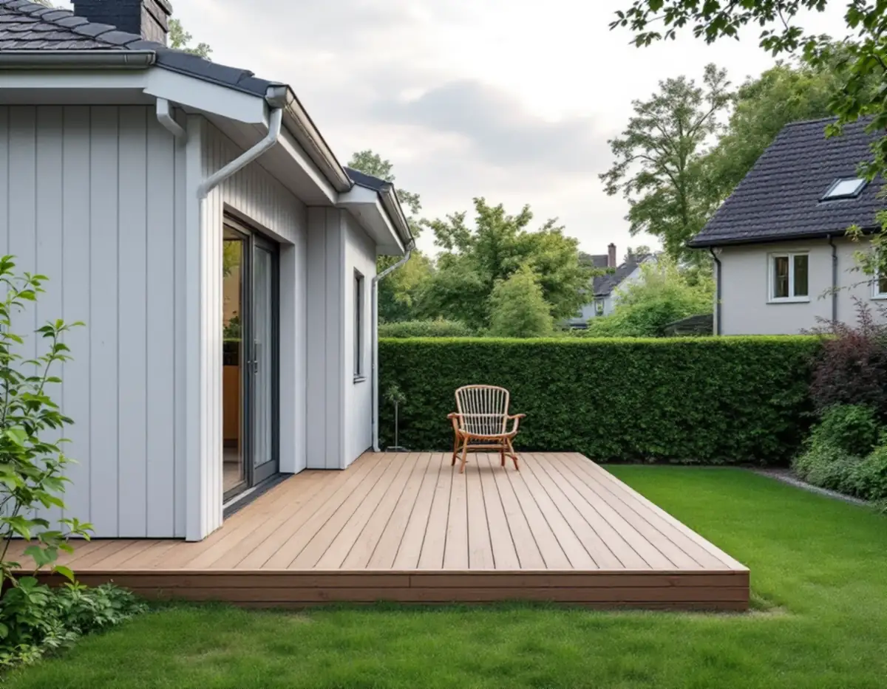
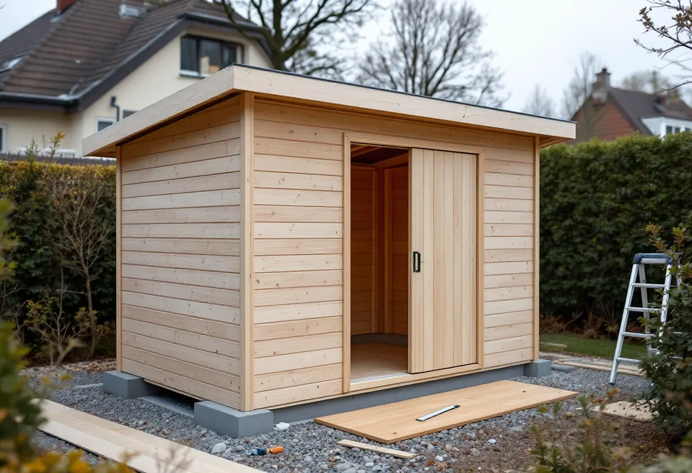

Platsbesök
Vi mäter avstånd till alla gränser och ser vad som redan har byggts lovfritt på tomten.
I Hässelby villastad är nästan alla småhus äganderätter, och i stadens villastäder har tomter delats genom åren. Därför kan en ny altan, bod eller ett plank hamna nära en grannegräns som inte fanns när huset byggdes. Geal Entreprenad AB bygger altaner, förråd, plank, staket och skärmtak i Hässelby villastad, Hässelby gård och Hässelby strand, med gratis platsbesök och skriftligt kostnadsförslag.

Stockholms stads områdesfakta för 2025 räknar 5 009 bostäder i småhus i stadsdelen Hässelby villastad. Av dem är 4 757 äganderätter och 204 bostadsrätter. För de flesta småhusägare här kan rotavdraget alltså gälla även arbete på husets utsida, till exempel en altan som byggs ihop med huset.
Stadens vägledning Varsam utveckling av småhus- och villaområden räknar Hässelby villastad till typen villastad. Där är villorna fritt placerade på tomterna, en successiv delning av tomter har skett genom åren och bebyggelsen kommer från flera tidsepoker. Husen är som regel indragna från gatan med en grön förgård, och gatorna kantades av klippta häckar eller staket.
När en tomt har delats kan grannens gräns ligga närmare huset än förr. Det spelar roll, eftersom det är avståndet 4,5 meter till gränsen som avgör om en bod eller ett högt plank kan byggas utan bygglov.

Enligt Stockholms stad ska en lovfri komplementbyggnad placeras 4,5 meter från gränsen mot granne, samfällighet eller allmän plats, och detsamma gäller murar och plank som är högre än 1,2 meter. Vill du bygga närmare behöver du skriftliga medgivanden från de berörda grannarna.
Staden anger vad ett medgivande ska innehålla: fastighetsbeteckning, vilken typ av åtgärd det gäller, en situationsplan där åtgärden och avståndet till gränsen är inritade, och underskrifter från berörda grannar. Medgivandet bör kunna visas upp för byggnadsnämnden om ett tillsynsärende uppstår. Får du inget medgivande behöver du söka bygglov.
Gränsar tomten mot en park eller gata är det oftast kommunen som är huvudman, och då behöver du stadens medgivande innan du bygger. Förfrågan skickas till stadsbyggnadskontoret.
En komplementbyggnad, som ett förråd, en gäststuga, ett garage eller en bastu, kräver inte bygglov om den är högst 30 kvadratmeter byggnadsarea, mindre än huset den kompletterar och högst 4,0 meter till taknocken. Alla lovfria komplementbyggnader och komplementbostadshus på tomten får tillsammans vara högst 45 kvadratmeter, och där räknas tidigare friggebodar och attefallshus in.
För altaner gäller samma höjdgränser som för plank och murar: högst 1,8 meter inom 3,6 meter från en byggnad och högst 1,2 meter längre bort. Lovfria altaner får avvika från detaljplanen så länge den totala ytan inte är större än 50 kvadratmeter. Byggs altanen in med väggar, även under golvet, kan den kräva bygglov som tillbyggnad.
Stadens vägledning råder att tillbyggnader i villastaden i första hand orienteras mot trädgårdssidan. Ligger huset fritt med trädgården mot gatan kan en tillbyggnad mot gatan fungera, om gaturummet inte påverkas negativt. Mer om altaner och trall finns på sidan om snickare.
Hässelby strand och Hässelby gård räknas i stadens vägledning till de gruppbyggda småhusområdena i tunnelbanestaden. Rad- och kedjehusen ligger ofta på bryn och platåer, och nivåskillnaderna tas ofta upp med en suterrängvåning.
Ett skärmtak över uteplatsen eller ett uterum räknas som tillbyggnad. Staden anger att en lovfri tillbyggnad får vara högst 30 kvadratmeter bruttoarea eller öppenarea och inte högre än husets taknock, och att tidigare friggebodsskärmtak, attefallstillbyggnader och attefallstakkupor räknas in i samma yta. Påverkar tillbyggnaden bärande konstruktion eller brandskydd krävs anmälan och startbesked.
I ett radhus kan gränsen mot grannen gå direkt vid uteplatsen, och då behövs ett skriftligt medgivande för det som hamnar närmare än 4,5 meter. Är fastigheten kulturhistoriskt värdefull enligt Stadsmuseets karta krävs bygglov även för det som annars är lovfritt. Ska skärmtaket anslutas mot husets tak finns mer under takrenovering i Hässelby.
Vi mäter avstånd till alla gränser och ser vad som redan har byggts lovfritt på tomten.
Stadsmuseets karta och detaljplanen kontrolleras, liksom var gränserna går efter tidigare tomtdelningar.
Vi ritar in bod, altan eller plank med avstånd, så att grannarna har ett underlag att skriva under.
Grund, stomme, beklädnad och tak står som separata poster.
Bygget utförs efter ritningen, med höjder och avstånd kontrollerade.
Vi går igenom arbetet med dig och lämnar situationsplanen att spara.
Skatteverket ger rotavdrag för att bygga en altan till ett småhus om den byggs ihop med huset, och för att reparera altaner, entrétrappor och räcken. Ett helt nytt fristående förråd, en friggebod eller ett garage ger inget avdrag, och inte heller att bygga staket och murar.
Bor du i ett radhus med bostadsrätt gäller avdraget bara arbete inne i bostaden, innanför väggar, tak och golv, och att bygga en altan ger då inget avdrag. Avdraget är 30 procent av arbetskostnaden, högst 50 000 kr per person och år och högst 75 000 kr tillsammans med rutavdrag. Material och resor ingår inte, och Geal drar avdraget direkt på fakturan.
Altanens storlek och höjd, hur boden grundläggs och om planket ska stå på en mur påverkar mest. Behövs bygglov tillkommer handlingar och handläggningstid. Platsbesöket är gratis och du får ett skriftligt kostnadsförslag.
Altan, väggar, dörrar och inredning.
Snickare i Stockholm →Takbyte, takbesiktning och plåtarbeten.
Takläggare i Hässelby →Villastaden, Hässelby strand och gård.
Takrenovering i Hässelby →Källarbadrum, backventil och bostadsrätt.
Badrumsrenovering i Hässelby →Riva, bygga nytt och delad tomt.
Byggföretag i Hässelby →Villastaden och radhusen.
Fasadmålning i Hässelby →Villastad, sommarstugor och grupphus.
Fasadrenovering i Hässelby →Slipa trägolvet – eller lägga nytt.
Golvläggare i Hässelby →Villastad, grupphus och radhus i Hässelby.
Målare i Hässelby →Plåttak efter eternit, rännor och beslag i Hässelby.
Plåtslagare i Hässelby →Eternit och asbest på taket.
Takbyte i Hässelby →Ny tapet i grupphus och villor.
Tapetsering i Hässelby →Grupphusen, eterniten och ventilationen.
Totalrenovering i Hässelby →